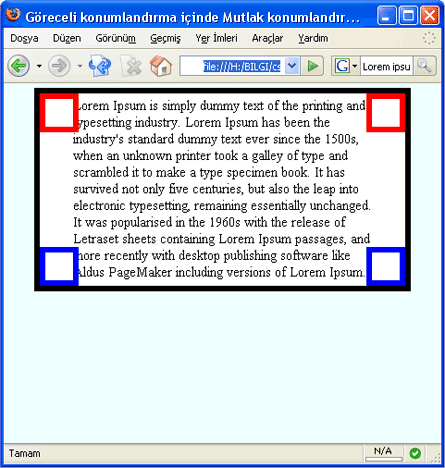
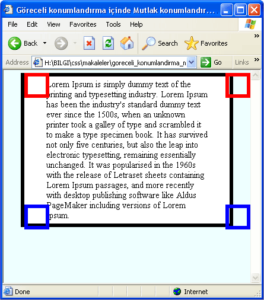

- Alispart'da web sitelerindeki boş alanlar üzerine yazılmış bir makale, bayağı bir özele inmişler. Link
- Web sitelerinde genelde kullandığımız alt kısımların(footer) web2.0'a uygun koleksiyonu güzel bir çalışma ile sunmuşlar. Link
- Bu site bizim için HTML 5(!) özellik ve değerlerini çıkarmış Link
- Tipografi hakkında güzel bir makale(makaleler ...
Web'de Geçen hafta olanlar
Genelde günlük veya iki günlük haber yazıyordum ancak araya giren uzun tatil boyunca haber yazamadım ve bayağı haber toplanmış bu nedenle biraz uzunca haber vereceğiz bu sefer
- Çoktandır RSS ve Atom okumak için program arıyordum. Ama asıl sorunum bunun için program kurmak istemememdi . Sonunda buldum Google Reader. kolay kullanımı ve ...
Özellik Seçicileri(Attribute Selectors)
Bu konuya biraz geç değindik biliyorum. Ancak bu konuyu (X)HTML Sayfa Yapısı ve CSS Kullanımı makalesi içinde yazmayı düşündüğümde IE bu özelliği desteklemiyordu(şimdi IE7 bu özelliği desteklemektedir.) bu nedenle yazımını ertelemiştim, sonrada unuttum gitti açıkçası neyse sonunda yazıyorum işte:)
CSS ile tanımlama yaparken Xhtml nesnelerine erişmede bazen sıkıntı ...
devamını okuCSS Hata Ayıklama Yöntemleri
IE'de Hata Ayıklamak için şžartlı Yorumlar Kullanmak adlı makalede bahsettiğimiz gibi "CSS ile web sitesi kodlamanın en büyük sorunu CSS'in özelliklerini yorumlayamayan veya yanlış yorumlayan web tarayıcılarıdır. Bu nedenle CSS ile web sitesi kodlarken bu tip hataları ayıklamamız gerekiyor. CSS ile hata ayıklama web tarayıcı gruplarının veya bir ...
devamını oku28 Aralık Web'den seçme haberler
- Google News artık beta değil. Evet sonunda Google News betası kalktı. Link
- CSSVista, css dosyalarınızı düzenleyebileceğiniz bedava bir editör. En çok kullanılan web tarayıcılarında(ie ve ff) kodlarınızın nasıl görünceğini de gösteriyor. Kurabilmeniz için Microsoft .NET Framework'e ihtiyaç duyması programın eksi yönü. Link
- kavidesign.com'dan 'e5+ için en ...
Göreceli-Mutlak Konumlandırma Sorunu
Bu hata göreceli olarak konumlandırılmış(position:relative) bir elementin içinde mutlak konumlandırılmış(position:absolute) elementlerin bulunduğu durumlarda meydana gelir. Bu hata IE6 ve altı versiyonlarda görülür.

Normal Görünüm - Firefox 2.0

Hatalı Görünüm - IE6
Yukarıdaki ekran görüntülerinde de görüldüğü gibi göreceli konumlandırma(position:relative) içerisinde kullanılan mutlak konumlandırılmış(position:absolute ...
devamını oku23 Aralık 2006'dan Seçme Web Haberleri
- 3 kolay adımla Karmaşık Likit Tasarım yapmayı anlatan güzel bir makale Link
- Tüm platformlara uygun sayfa kodlama tekniklerinin anlatıldığı güzel bir makale Link
- Kullanışlı ve erişilebilirliği yüksek form sayfaları kodlamanın anlatıldığı güzel bir makale Link
- Netvibes Türkiye hem de Türkçe açılmış Link
- CSS'in 10 yıllık gelişimi kronolojisi Link
- 2007 ...
String.split() Metodu
Split metodu, uygulandığı string'i parçalara böler ve bu parçaları bir diziye(array) atar.
**Web Tarayıcı Uyumu :** ECMAScript 2, JavaScript 1.1, JScript 3.0, Internet Explorer 4.0, Netscape 3.0, Opera 3.0 **Değer Tipi :** Dizi nesnesi **Javascript Sözdizimi:** ilkDeyim.**split**(aKalip) ilkDeyim.**split**(aAyrac) ilkDeyim.**split**(aAyrac ...devamını oku19 Aralık 2006 web'den derleme haberler
Çoktandır sanal alemde gezip haberlere göz atmamışım, bayağı bir haber birikmiş
- CSS hakkında güzel ayrıntılar sunan güzel bir makale Link
- Web sitelerinin %97'sinin erişilemez düzeyde olduğu ve neler olması gerektiğini üzerine bir makale Link
- Html sayfalar html içerik eklememizi sağlayan güzel bir makale, iframe kullanımına son verebilirsiniz. Link
- CSS ...
IE'de Hata Ayıklamak için şartlı Yorumlar Kullanmak
CSS ile web sitesi kodlamanın en büyük sorunu CSS'in özelliklerini yorumlayamayan veya yanlış yorumlayan web tarayıcılarıdır. Bu nedenle CSS ile web sitesi kodlarken bu tip hataları ayıklamamız gerekiyor. CSS ile hata ayıklama web tarayıcı gruplarının veya bir kısım web tarayıcısı için kuralları veya bildirimleri gizlemek veya göstermek şeklinde uygulanır ...
devamını oku